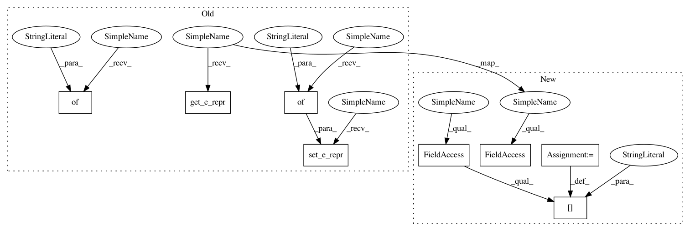

68ec624782bb4e4fb9f1adf1088cf39c1826533e,tests/pytorch/test_batched_graph.py,,test_batched_edge_ordering,#,129
Before Change
g1.add_nodes(6)
g1.add_edges([4, 4, 2, 2, 0], [5, 3, 3, 1, 1])
e1 = th.randn(5, 10)
g1.set_e_repr({"h" : e1})
g2 = dgl.DGLGraph()
g2.add_nodes(6)
g2.add_edges([0, 1 ,2 ,5, 4 ,5], [1, 2, 3, 4, 3, 0])
e2 = th.randn(6, 10)
g2.set_e_repr({"h" : e2})
g = dgl.batch([g1, g2])
r1 = g.get_e_repr()["h"][g.edge_id(4, 5)]
r2 = g1.get_e_repr()["h"][g1.edge_id(4, 5)]
assert th.equal(r1, r2)
def test_batch_no_edge():
After Change
g1.add_nodes(6)
g1.add_edges([4, 4, 2, 2, 0], [5, 3, 3, 1, 1])
e1 = th.randn(5, 10)
g1.edata["h"] = e1
g2 = dgl.DGLGraph()
g2.add_nodes(6)
g2.add_edges([0, 1 ,2 ,5, 4 ,5], [1, 2, 3, 4, 3, 0])
e2 = th.randn(6, 10)
g2.edata["h"] = e2
g = dgl.batch([g1, g2])
r1 = g.edata["h"][g.edge_id(4, 5)]
r2 = g1.edata["h"][g1.edge_id(4, 5)]
assert th.equal(r1, r2)
def test_batch_no_edge():
In pattern: SUPERPATTERN
Frequency: 3
Non-data size: 8
Instances
Project Name: dmlc/dgl
Commit Name: 68ec624782bb4e4fb9f1adf1088cf39c1826533e
Time: 2018-11-02
Author: minjie.wang@nyu.edu
File Name: tests/pytorch/test_batched_graph.py
Class Name:
Method Name: test_batched_edge_ordering
Project Name: dmlc/dgl
Commit Name: 68ec624782bb4e4fb9f1adf1088cf39c1826533e
Time: 2018-11-02
Author: minjie.wang@nyu.edu
File Name: tests/pytorch/test_basics.py
Class Name:
Method Name: test_batch_setter_getter
Project Name: dmlc/dgl
Commit Name: 68ec624782bb4e4fb9f1adf1088cf39c1826533e
Time: 2018-11-02
Author: minjie.wang@nyu.edu
File Name: tests/pytorch/test_basics.py
Class Name:
Method Name: test_dynamic_addition